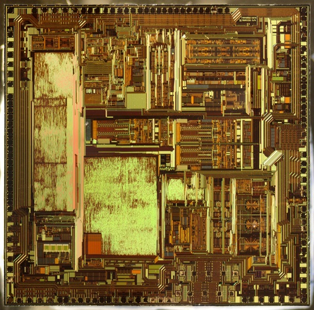

Teste- Pesquisa, ensino e projetos em eletrônica
Seja bem vindo! Aqui você encontra informações de contato, publicações recentes, materiais didáticos das disciplinas e alguns trabalhos desenvolvidos por mim e pelos meus alunos.

Seja bem vindo! Aqui você encontra informações de contato, publicações recentes, materiais didáticos das disciplinas e alguns trabalhos desenvolvidos por mim e pelos meus alunos.
